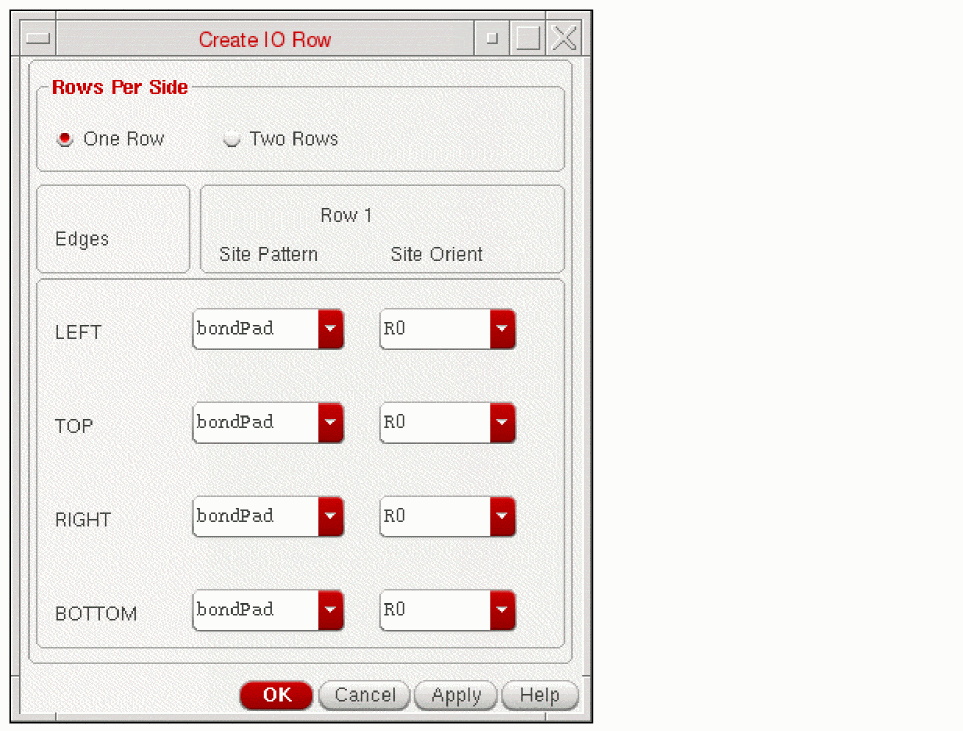
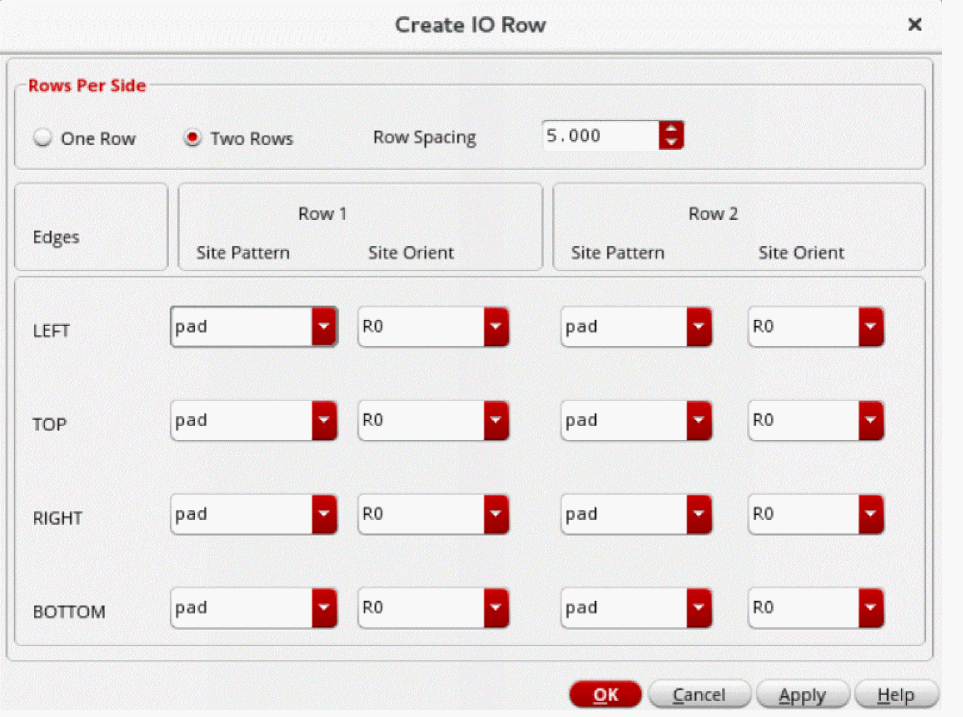
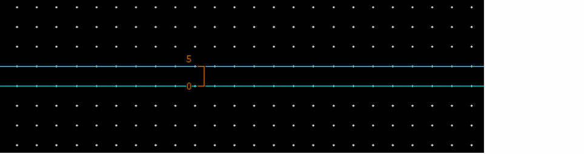

Creating I/O Rows
In Floorplanner, the first step in IO planning and placement is to create IO rows. The rows determine the legal placement area for PADs, where to place the PADs, and the type of PADs to be placed. You can manually create rows anywhere in the design and use IO Placer with manually created rows. The manually created rows need to have the correct settings.
-
Choose Floorplan – I/O Placer - I/O Row Create.
In Layout EXL and higher tiers, choose Plan – I/O Planning – I/O Row Create.
The Create IO Row form is displayed.
The site definition of the typePADis read from the technology file and displayed in the Site Pattern fields. If there is no site definition of type PAD available, the row creation UI is not displayed. -
In the Rows Per Side section, select One Row or Two Rows. One Row is selected by default and the options for Row 1 are displayed. A maximum of two rows can be created on each side (TOP, LEFT, BOTTOM, and RIGHT) of the top-level boundary. Select Two Rows if you want to create two rows on each side. This inserts the site pattern and site orientation options for Row 2, as displayed in the following figure.
 -
Specify the row spacing between two rows using the Row Spacing field to ensure DRC correctness between the IO rows.
The image below displays the row spacing between the two rows.
 - Specify the row site patterns and their orientation for each side from the Site Pattern and Site Orient combo fields to create a row.
- Click OK.
This creates the row at the appropriate position. If the row already exists at the position where new row is to be created, the existing pad rows are replaced by the new row. If you run this command again and some rows already exists, they would be deleted automatically.
The site pattern is extracted from the technology file. The site orientation is the relative orientation of the pad inside the row and not the final pad orientation.
Related Topics
Return to top